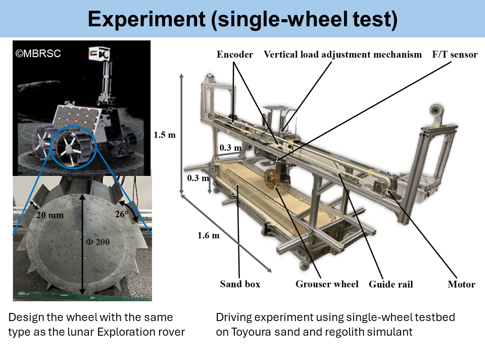

Measurement of the wheel performance for Rashid-1 Rover (Lunar Exploration Rover) by Single-Wheel Test

Highlights
Evaluate traction performance and sinkage against various slip ratios using a single-wheel experiment.
At low speeds, the traction performance difference is insignificant.
Traction performance decreases as load on wheels increases
Traction performance increases in cohesive sand such as lunar regolith
Keywards
Rover, Single-wheel test, Grouser wheel, Lunar regolith
Publication list
Keisuke Takehana, Shino Kizaki, Kentaro Uno, Tomomi, Tanaka, Gentaro Suda, and Kazuya Yoshida, "Evaluation and Comparison of Driving Performance of a Lunar Exploration Rover Wheel in Different Soils," Proceedings of the 16th European-African Regional Conference of the International Society for Terrain-Vehicle Systems (ISTVS), pp. 151-158, 2023. [DOI]